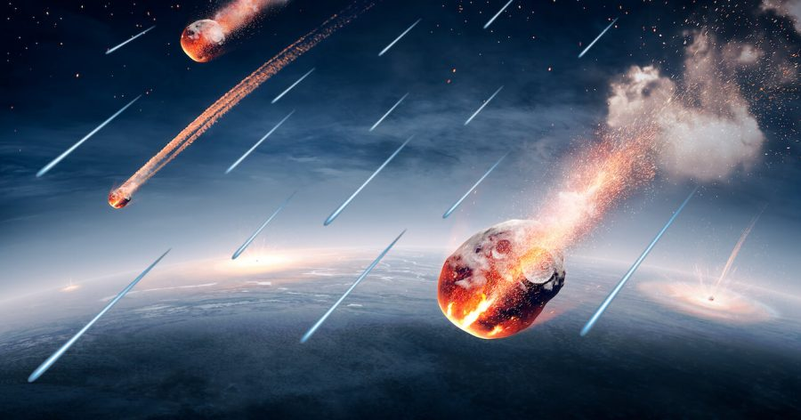

ကမ္ဘာဦး ကာလမှာ ရှိခဲ့တဲ့ ‘ရေ’ ကို ကမ္ဘာပေါ်ကို ကျရောက်လာ ခဲ့တဲ့ ဥက္ကာပျံ တွေကနေ သယ်ဆောင်လာခဲ့တယ်လို့ သိပ္ပံ သုတေသန စာတမ်း တစ်ခုက တင်ပြထားပါတယ်။ ဂျပန်နိုင်ငံက လွှတ်တင်ခဲ့တဲ့ ဂြိုဟ်သိမ် စူးစမ်း လေ့လာရေးယာဉ် ကနေ ကောက်ယူခဲ့တဲ့ ကျောက်သား နမူနာတွေကို ဓါတ်ခွဲ စမ်းသပ်မှု အရ ဒီ အချက်ကို တွေ့ရှိခဲ့ ကြတာ ဖြစ်ပါတယ်။
ဒီ ဂျပန် သုတေသန ယာဉ်ဟာ အီတိုကာဝါ (Itokawa asteroid) အမည်ရ ဂြိုဟ်သိမ် တစ်ခုပေါ်ကနေ နမူနာ ကျောက်သားတွေ ကောက်ယူခဲ့တာ ဖြစ်ပါတယ်။
ဒါဆို မေးစရာ ရှိလာတာက ဒီ ဥက္ကာပျံ ပေါ်က ရေကရော ဘယ်က ရောက်လာလဲ ဆိုတာပါပဲ။
အဖြေကတော့ ဘယ်ကမှ ရောက်မလာပါ ဘူးတဲ့။ ဥက္ကာပျံ တွေပေါ်က ရေ ဟာ ဒီ ဥက္ကာပျံ တွေကို နေက လာတဲ့ ဆိုလာလေ လာရောက် တိုက်ခတ်တာကြောင့် ဖြစ်ပေါ်လာတာ ဖြစ်ပါတယ်။ တနည်း ပြောရရင် ဒီ ဥက္ကာပျံ ပေါ်မှာပဲ ဖြစ်လာတာပါ။
နေက ထွက်လာတဲ့ ဆိုလာလေ (solar wind) တွေဟာ အာကာသ ဟင်းလင်းပြင် ကြီးထဲကို တချိန်လုံး တိုက်ခတ် နေပါတယ်။ ဒီ ဆိုလာလေ ဆိုတာက အဓိက ကတော့ လျှပ်စစ်အား ဝင်နေတဲ့ ပရိုတွန် နဲ့ အီလက်ထရွန် အမှုန်လေးတွေ အရှိန်နဲ့ လွင့်ထွက်လာ ကြတာကို ‘လေ’ အနေနဲ့ တင်စား ပြောဆိုတာပါ။ ဒီ ဆိုလာလေမှာ ပါတဲ့ ပရိုတွန် ဆိုတာက တကယ်တော့ ဟိုက်ဒြိုဂျင် အိုင်းယွန်း (Hydrogen ion) ပဲ ဖြစ်ပါတယ်။ နောက်ပြီး ဆိုလာလေ မှာ လျှပ်စစ်အား ဝင်နေတဲ့ ဟီလီယံ အိုင်းယွန်း (Helium ion) တွေလဲ ပါပါသေးတယ်။
ဒီ ဟိုက်ဒြိုဂျင် အိုင်းယွန်းတွေဟာ အာကာသ လေဟာနယ်ထဲ ဖြတ်သန်းလာရင်းနဲ့ ဥက္ကာပျံ၊ ဥက္ကာခဲ တွေ၊ ဂြိုဟ်သိမ်တွေကို ဝင်ဆောင့်မိ ကြပါတယ်။
ဒီလို ဝင်တိုက်မိတဲ့ အခါ ဒီ အမှုန် လေးတွေဟာ ဂြိုဟ်သိမ် ဂြိုဟ်မွှားတွေ၊ ဥက္ကာခဲ တွေရဲ့ မျက်နှာပြင်ကို နာနိုမီတာ (nanometer) အနည်းငယ်လောက် ဖောက်ဝင် တိုက်စား သွားပါတယ်။ (၁ နာနိုမီတာ ဟာ တစ် မီတာရဲ့ သန်း ၁,၀၀၀ ပုံ တစ်ပုံ ရှိပါတယ်။)
ဒီ လိုနဲ့ နှစ်ပေါင်း များစွာ ကြာတဲ့ အခါ ဒီ ဆိုလာလေ တိုက်ခတ်ခံရမှုကြောင့် ဂြိုဟ်သိမ် တွေရဲ့ မျက်နှာပြင်ဟာ တိုက်စား ခံရပြီး မျက်နှာပြင် အောက်မှာ မြုပ်နေတဲ့ အောက်ဆီဂျင်တွေ မျက်နှာပြင်ပေါ် ထွက်လာပါတယ်။
ဆိုလာလေ မှာ ပါလာတဲ့ ဟိုက်ဒြိုဂျင် အိုင်းယွန်းတွေဟာ ဂြိုဟ်သိမ်တွေရဲ့ မျက်နှာပြင်ပေါ် ရောက်လာတဲ့ အောက်ဆီဂျင်နဲ့ ဓါတ်ပြုပါတယ်။ ဟိုက်ဒြိုဂျင်နဲ့ အောက်ဆီဂျင် ဓါတ်ပြုရင် ထွက်လာတာ ကတော့ အားလုံး သိပြီး ဖြစ်ကြတဲ့ အတိုင်း ‘ရေ’ ပဲ ဖြစ်ပါတယ်။
အခု တွေ့ရှိချက်ဟာ ကမ္ဘာပေါ်မှာ ဒီလောက် များတဲ့ ရေ တွေ ဘယ်က ရောက်လာလဲ ဆိုတဲ့ မေးခွန်းအတွက် အရေးပါတဲ့ အဖြေတစ်ခု ဖြစ်နေနိုင် ပါတယ်။ ဒီမေးခွန်းဟာ သိပ္ပံ ပညာရှင် တွေကို အတော်လေး ခေါင်းခြောက်စေ ခဲ့တဲ့ မေးခွန်းပါ။ ကမ္ဘာပေါ်မှာ ဒီလောက် ရေတွေ များနေတာ ဘာ့ကြောင့်လဲ ဆိုတဲ့ အကြောင်းရင်းကို သိပ္ပံ ပညာရှင် တွေ အဖြေရှာ မရခဲ့ပါဘူး။
ကမ္ဘာ့ မျက်နှာပြင်ရဲ့ ၇၀% ကို ရေက ဖုံးလွှမ်း ထားပါတယ်။ ဒီ ပမာဏ ဟာ နေအဖွဲ့အစည်း အတွင်းက အခြား ဂြိုဟ်တွေမှာ ရှိတဲ့ ရေ ပမဏထက် အရမ်းကို များတဲ့ ပမာဏပါ။ ဒီလောက်များတဲ့ ရေတွေ ဘယ်လို ဖြစ်လာလဲဆိုတာနဲ့ ပါတ်သက်ပြီး သီအိုရီတွေ အမျိုးမျိုး အဆိုပြုခဲ့ကြ ပေမယ့် ဘယ်သီအိုရီ ကမှ ကြေနပ်လောက်တဲ့အ ဖြေ မပေးနိုင် သေးပါဘူး
အများစု လက်ခံထားတဲ့ သီအိုရီ ကတော့ ကို လွန်ခဲ့တဲ့ နှစ်သန်း ၄,၆၀၀ ခန့်အလွန်က ကမ္ဘာပေါ် ကျရောက်ခဲ့ တဲ့ ဥက္ကာပျံ တွေကနေ ရေ ကို သယ်ဆောင် လာခဲ့တယ် ဆိုတဲ့ အဆိုပြုချက်ပဲ ဖြစ်ပါတယ်။ ဒီ သီအိုရီ အရ ကမ္ဘာဦး ကာလမှာ ကာဗွန်ဒြပ် အများအပြား ပါဝင်တဲ့ ဥက္ကာခဲတွေ အမြောက်အများ ကမ္ဘာပေါ်ကို ကျရောက်ခဲ့ ရာက ကမ္ဘာပေါ်ကို များပြားလှတဲ့ ရေ တွေ ရောက်လာခဲ့တယ်လို့ ဆိုပါတယ်။
ဒီ သီအိုရီကို သက်သေပြ နိုင်ဖို့ သိပ္ပံ ပညာရှင် တွေဟာ ကာဗွန် အမြောက်အများ ပါတဲ့ carbonaceous chondrites အမျိုးအစား ဥက္ကာခဲ တွေကို ဓါတ်ခွဲ စစ်ဆေး ခဲ့ကြပါတယ်။
ဒီမှာ ပြဿနာ တစ်ခု တွေ့လာပါ တော့တယ်။ ဒီ ကာဗွန် ဥက္ကာတုံး တွေရဲ့ အထဲမှာ ရေတွေ တော့ အများအပြား တွေ့ပါတယ်။ ဒါပေမယ့် တွေ့တဲ့ ရေရဲ့ ဓါတု ဖွဲ့စည်းပုံက ကမ္ဘာပေါ်မှာ တွေ့တဲ့ ရေရဲ့ ဓါတု ဖွဲ့စည်းပုံနဲ့ မတူပဲ ကွဲနေပါတယ်။
ဒီနေရာမှာ ရေ ဆိုတာ ဟိုက်ဒြိုဂျင် နှစ်လုံး နဲ့ အောက်ဆီဂျင် တစ်လုံးပေါင်းပြီး ဖြစ်လာတဲ့ H2O ပဲလေ၊ ဘယ်လို ဓါတု ဖွဲ့စည်းပုံ မတူရ မှာလဲ လို့ မေးစရာ ဖြစ်လာပါတယ်။
ဒီ ကာဗွန် ဥက္ကာတုံး တွေထဲမှာ ပါလာတဲ့ ‘ရေ’ အများစုမှာ ဖွဲ့စည်းထားတဲ့ ဟိုက်ဒြိုဂျင်ဟာ ကမ္ဘာပေါ်က ရေမှာ ဖွဲ့စည်းထားတဲ့ ဟိုက်ဒြိုဂျင် လို ပရိုတွန် တစ်လုံးထဲ ပါတဲ့ ဟိုက်ဒြိုဂျင် မဟုတ်ပဲ ပရိုတွန် တစ်လုံးအပြင် နျူထရွန် တစ်လုံးပါ အပိုပါတဲ့ ဒြူတီရီယမ် (deuterium) ဖြစ်နေပါတယ်။ တနည်းအားဖြင့် ကာဗွန် ဥက္ကာတုံး တွေက ပါလာတဲ့ ရေဟာ “ရေလေး (heavy water)” ဖြစ်ပါတယ်။
ဒီတော့ သိပ္ပံ ပညာရှင်တွေ အနေနဲ့ ကမ္ဘာပေါ်က ရေ ရောက်လာနိုင်မယ့် အခြား အရင်းအမြစ်တွေ ရှာဖွေဖို့ လိုအပ်လာပါတယ်။ ဒီတော့ ဂျပန် သုတေသန ယာဉ်က ကောက်ယူ စုဆောင်းထားတဲ့ ဥက္ကာခဲ တွေကို ဓါတ်ခွဲစမ်းသပ်ကြည့်ဖို့ စီစဉ် ခဲ့ကြပါတယ်။ ဒီ ဥက္ကာခဲ ကျောက်နမူနာ တွေဟာ ဆီလီကွန် အောက်ဆိုက် အများအပြား ပါတဲ့ ကျောက်တွေ ဖြစ်ပါတယ်။ ဒီ ကျောက်တွေကို ဓါတ်ခွဲ စစ်ဆေးဖို့ အထူး နည်းပညာ တစ်ရပ်ကိုလဲ တည်ထွင်နိုင် ခဲ့ကြပါတယ်။
ဒီ နည်းစနစ်သစ်ကို atom probe tomography လို့ အမည်ပေးထားပါတယ်။ ဒီနည်းကို အသုံးပြုပြီး ပညာရှင် တွေဟာ ကျောက်သား နမူနာရဲ့အက်တမ် တလွှာခြင်း စီကိုတောင် အသေးစိတ် လေ့လာ နိုင်ခဲ့ကြပါတယ်။
အခု သုတေသနမှာ ဂျပန် သုတေသနယာဉ် ဟာယာဘူဆာ (Hayabusa) က အီတိုကာဝါ (Itokawa Asteroid) ဂြိုဟ်သိမ်ကနေ ကောက်ယူခဲ့ပြီး ကမ္ဘာကို ၂၀၁၀ ခုနှစ်က ပြန်ပို့ခဲ့တဲ့ ကျောက်သား နမူနာတွေ ပေါ်မှာ ဓါတ်ခွဲစမ်းသပ်ခဲ့တာ ဖြစ်ပါတယ်။
ဒီ နည်းစနစ်ကို သုံးပြီး ကျောက်သား နမူနာရဲ့ အပေါ်ယံ လွှာက အထု ၅၀ နာနိုမီတာ အနက်အထိကို အက်တမ် တလွှာ ချင်းစီ အထိ အသေးစိတ် လေ့လာ နိုင်ခဲ့ပါတယ်။ (တစ်လက္မ ကို နာနိုမီတာ ၂၄.၅ သန်း ရှိပါတယ်)။
ဒီလေ့လာမှု အရ ဒီ ဂြိုသိမ်ရဲ့ ကျောက်သားထဲမှာ မြုပ်နေတဲ့ ရေဟာ ကျောက်ထု တစ် ကုဗမီတာ (တစ် ကုဗ မီတာဆိုတာ အလျား ၁ မီတာ၊ အနံ ၁ မီတာ၊ အမြင့် ၁ မီတာ ရှိတဲ့ အတိုင်းအတာ ဖြစ်ပါတယ်) မှာ ရေ ၂၀ လီတာတောင် ပါဝင်တယ် ဆိုတာ တွေ့ကြရ ပါတယ်။
နောက်ပြီး ဒီ ကျောက်တုံးပေါ်မှာ ဆိုလာလေ တိုက်ခတ်မှု ကြောင့် ဖြစ်လာတဲ့ ရေ ရဲ့ ဖွဲ့စည်းပုံ ဟာလဲ ပုံမှန် ကမ္ဘာပေါ်မှာ ပေါပေါများများ တွေ့ရလေ့ ရှိတဲ့ ရေရဲ့ ဖွဲ့စည်းပုံနဲ့ တူနေတာ တွေ့ရပါတယ်။
ဒီ အချက်တွေကို မူတည်ပြီး သုတေသီ တွေက ကမ္ဘာဦး ကာလမှာ ကမ္ဘာပေါ်ကို အမြောက်အများ ရောက်လာခဲ့တဲ့ ရေ ဟာ နေကလာတဲ့ ဆိုလာလေ ဂြိုဟ်သိမ်နဲ့ ဥက္ကာခဲတွေ အပေါ် ဖြတ်ပြီး တိုက်ခတ်မှုကြောင့် ဖြစ်ပေါ်လာတာ ဖြစ်ပြီး ဒီရေကို အဲ့သည် ဥက္ကာခဲ တွေကပဲ ကမ္ဘာပေါ်ကို သယ်ဆောင် လာခဲ့တာ လို့ အဆိုပြုခဲ့ ကြပါတယ်။
ဒီ သုတေသနရဲ့ အရေးပါမှုက ကမ္ဘာဦး ရေ ရဲ့မူရင်းကို ရှာဖွေနိုင်တာ တစ်ခုတည်း အတွက် ကြောင့်တော့ မဟုတ်ပါဘူး။ ဒီ တွေ့ရှိချက်က ဘာကိုလဲ ညွှန်ပြနေလဲ ဆိုတော့ နေအဖွဲ့အစည်းထဲက ဂြိုဟ်သိမ်တွေ၊ ဥက္ကာခဲတွေ ရဲ့ အထဲမှာ ရေ တွေ အများအပြား ရှိနေနိုင်တယ် ဆိုတာကိုလဲ ညွှန်ပြနေပါတယ်။
ဒီ အချက်က နောင် အာကာသထဲ ခရီးသွားဖို့ ကြံစည်နေကြ သူတွေ အတွက်တော့ သတင်းကောင်း တစ်ခုပဲ ဖြစ်ပါတယ်။ ဘာ့ကြောင့်ဆို အာကာသ ထဲမှာ ခရီးရှည် သွားဖို့ လိုအပ်တဲ့ ကုန်ကြမ်းတွေကို အာကာသထဲမှာ ရှာဖွေဖို့ သိပ်ခက်ခဲမှာ မဟုတ်ဘူး ဆိုတာကို ညွှန်ပြနေလို့ပါ။ အထူးသဖြင့်တော့ အမြောက်အများ လိုအပ်တဲ့ ရေ ကို ခရီးရှည် အတွက် ဘယ်လို သယ်သွားမလဲ ဆိုတဲ့ ပြဿနာရဲ့အဖြေလဲ ဖြစ်ကောင်း ဖြစ်လာနိုင်ပါတယ်။
“ဒီ ကျောက်တုံးပေါ်မှာ ဆိုလာလေကြောင့် ရေ ဖြစ်လာ တဲ့ ဖြစ်စဉ်လိုမျိုးနဲ့ အလားတူတဲ့ ဖြစ်စဉ်တွေ အခြား ဥက္ကာခဲ တွေနဲ့ ဂြိုဟ်သိမ်တွေ ပေါ်မှာလဲ ဖြစ်နေမှာပဲလို့ ကျွန်တော်တို့ ယူဆပါတယ်။ ဒါဆိုရင် အာကာသ ခရီးရှည် သွားမယ့် သူတွေ အဖို့ လိုအပ်တဲ့ ရေကို လမ်းခရီးမှာ ရှိတဲ့ ဂြိုဟ် တွေနဲ့ ဂြိုဟ်သိမ်တွေရဲ့ မျက်နှာပြင်ကနေ အလွယ်တကူ ထုတ်ယူ သုံးစွဲနိုင် ကြမှာပါ” လို့ ဒီ စာတမ်းကို ပူးတွဲ ရေးသားသူ ဘူမိရူပဗေဒ ပညာရှင် ဟုပ် အစ်ဟီအီ (Hope Ishii) က ပြောကြား ခဲ့ပါတယ်။
Reference: Earth’s earliest water may have come from solar wind and space rocks | Space
ကမ္ဘာဦးက ‘ရေ’ ကို ဥက္ကာပျံတွေက သယ်ဆောင်လာခဲ့သလား

December 1, 2021
Other Posts
- ကွေဆာ (သို့) စကြာဝဠာရဲ့ အတောက်ပဆုံး အရာဝတ္ထုများ
- အာကာာသ လေဟာနယ်မှာ အသက်ရှင်နိုင်တဲ့ “ရေဝံ”
- AI ဉာဏ်ရည်တု တိုက်ခိုက်ရေး ဒရုန်းများရဲ့ အန္တရာယ်
- သမုဒ္ဒရာ ကြမ်းပြင်က ပင်လယ်ရေအောက် ရေတံခွန်ကြီး
- ဖလက်ရှ်ကတ် (Flash Card) သုံးပြီး ဖိုးနစ် (Phonics) စသင်ရအောင်
- James Webb တယ်လီစကုပ် ကြီးရဲ့ ပင်မကြေးမုံ အောင်မြင်စွာ ဖြန့်ချနိုင်ခဲ့ပြီ
- လျှပ်စစ်ဓါတ်အား လုံးဝမလိုပဲ လေထုထဲက သောက်ရေသန့် ထုတ်ပေးမယ့် ကိရိယာ
- အလင်း ဖိုတွန်ကို ထက်ခြမ်းခြမ်းနိုင်မယ်
- ကမ္ဘာ့လေထု အထက်လွှာက ထူးဆန်းတဲ့ အပြာရောင် မိုးကြိုး တန်း
- အိုင်းစတိုင်း လက်စွပ်